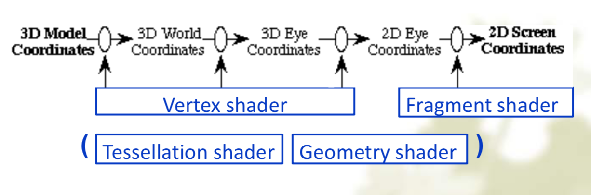
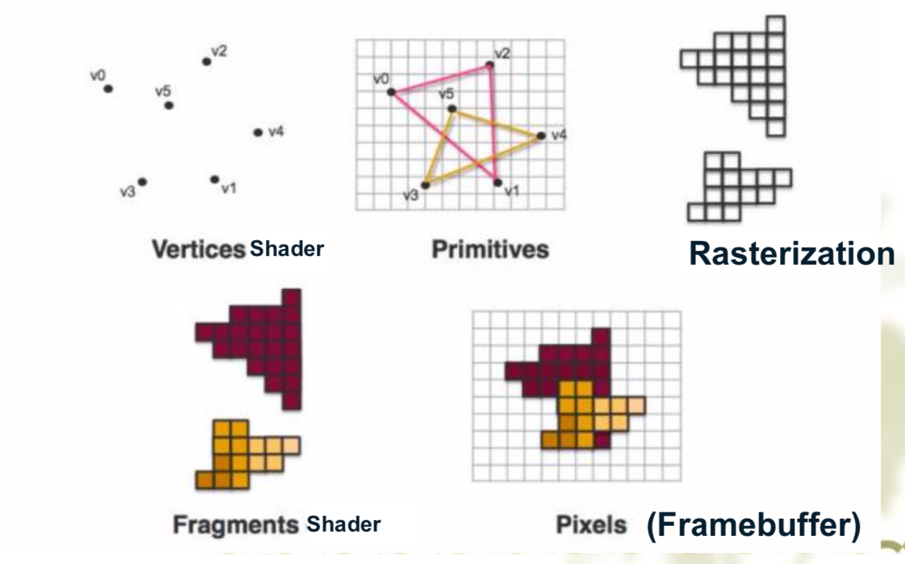
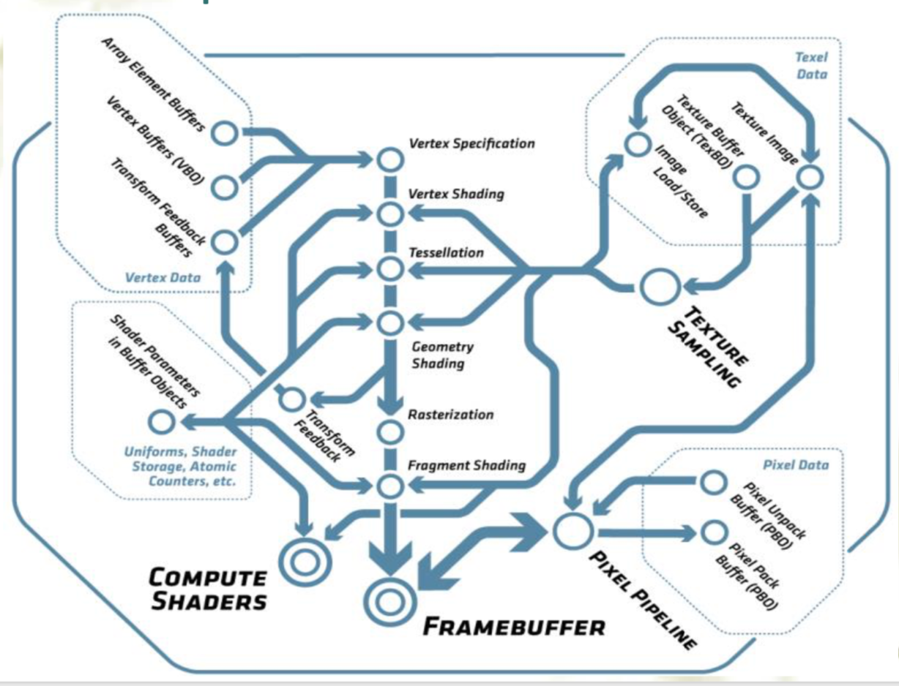
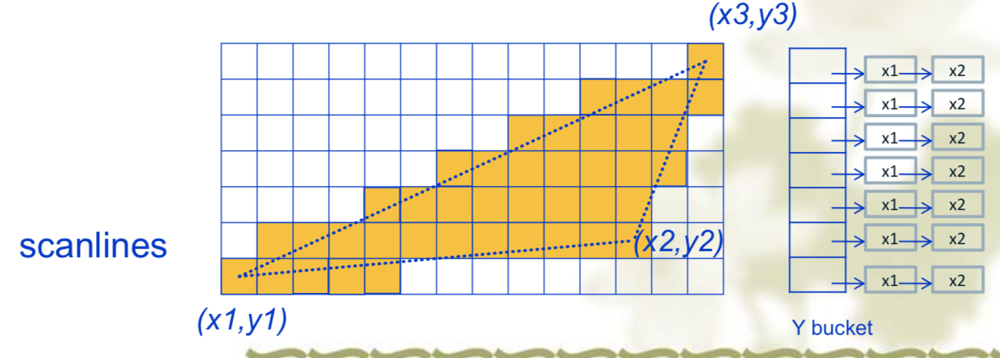

计算机图形学（六）From Vertices to Fragments
0. 引入
Moeling Pipeline

Rendering Pipeline

OpengGL
- OpenGL 4.5
- Direct State Access, DSA
- object accessors enable state to be queried and modified without binding objects to contexts, for increased application and middleware efficiency and flexibility;
- Flush Control
- applications can control flushing of pending commands before context switching – enabling high-performance multithreaded applications;
- Robustness
- OpenGL ES 3.1 API and shader compatibility
- DX11 emulation feature
- Direct State Access, DSA
- OpenGL 4.6 Core Profile

- OpenGL Fundamentals
- OpenGL Objects Model
- OpenGL 4.5
1. Clipping: line, polygon
Cohen-Sutherland线段剪裁算法
Two steps:
- 判断线段是否需要裁剪
- 裁剪线段
Cases:
- Case1: both endpoints of line segment inside all four lines
- Draw
- Case 2: both endpoiints outside all lines and on same side of a line
- Discard
- Case 3: one endpoint inside, one outside
- Must do at least one intersection
- Case4: both outside
- May have part inside
- must do at least one intersection
- Case1: both endpoints of line segment inside all four lines
Outcodes
Outcodes:
XXXX – TBRL
1001 1000 1010 0001 0000 0010 0101 0100 0110
例子：
- l1: code1=0000; code2=0000
- l2: code1=0100; code2=0110
算法：
线段完全保留：
if (code1==0&&code2==0) or (code1|code2)==0
线段完全放弃：
if ((code1&code2)<>0)
剪裁线段：
else computing intersection
Reexecute algorithm
Efficiency
- In many applications, the clipping window is small relative to the size of the entire data base
- Inefficiency when code has to be reexecuted for line segments that must be shortened in more than one step
Cohen Sutherland in 3D
- 6-bit outcode 前后上下右左
梁友栋-Barsky线段剪裁算法
算法描述：
线段$(s_1,s_2)$的参数方程：
$$
\begin{equation}
\left{
\begin{aligned}
x=x_1+t(x_2-x_1)\
y=y_1+t(y_2-y_1)
\end{aligned}
\right.
\end{equation}
\ \ \ \ \ 0\le t\le1
$$始边和终边：
- 始边：靠近$s_1$的窗边界线，如$xL$, $yB$
- 终边：靠近$s_2$的窗边界线，如$xR$, $yT$
$t_1$, $t_2$
$t_1=\max{t_1’,t_1’’,0}$，$t_1’$,$t_1’’$为$s_1$,$s_2$与两个始边的焦点参数
$t_2=\min{t_2’,t_2’’,1}$，$t_2’$,$t_2’’$为$s_1$,$s_2$与两个终边的焦点参数
当$t_1<t_2$时，为可见直线段：
$$
\begin{equation}
\left{
\begin{aligned}
x=(x_2-x_1)t+x_1\
y=(y_2-y_1)t+y_1
\end{aligned}
\right.
\end{equation}
\ \ \ \ t_1<t<t_2
$$当$t_1>t_2$时，直线不可见
求解$t_1’$, $t_1’’ $, $t_2’$, $t_2’’$ ：
$$
xL\le(x_2-x_1)t+x_1\le xR\
yB\le(y_2-y_1)t+y_1\le yT
$$- 简化求解为：$t*p_k\le q_k$, $k=1,2,3,4$
- $p_1=-(x_2-x_1)$, $q_1=x_1-xL$
- $p_2=(x_2-x_1)$, $q_2=xR-x_1$
- $p_3=-(y_2-y_1)$, $q_3=y1-yB$
- $p_4=(y_2-y_1)$, $q_4=yT-y1$
- 简化求解为：$t*p_k\le q_k$, $k=1,2,3,4$
可知：
- 若$p_k<0$，则$t_k$为始边之交点参数
- 若$p_k>0$，则$t_k$为终边之交点参数
- 若$p_k=0$，当$q_k<0$，则线段完全不可见
优点
- Can accept/reject as easily as with Cohen- Sutherland
- Using values of t, we do not have to use algorithm recursively as with C-S. 不用对线段进行多次剪裁处理，从而避免了剪裁算法的多次重复执行。
- Extends to 3D
Polygon Fill-Area Clipping
Sutherland-Hodgman Polygon Clipping:
思想：用四个窗边界线依次剪裁多边形的所有边
算法：
for (窗边界线: 1 to 4){
for (多边形的边界线: 1 to n)
求输出顶点;
得到一个剪裁后的顶点序列
}
得到最终剪裁后的顶点序列
Clipping and Normalization
- General clipping in 3D requires intersection of line segments against arbitrary plane
- Example: oblique view
2. Rasterization: Scan Conversion
Rasterization 光栅化
- Process:
- Modeling, Geometric processing, Rasterization, Fragment Processing, Frame Buffer
- Rasterization (scan conversion)
- Determine which pixels that are inside primitive - specified by a set of vertices
- Produces a set of fragments
- Fragments have a location (pixel location) and other attributes such color and texture coordinates that are determined by interpolating values at vertices
- Pixels colors determined later using color, texture, normal and other vertex properties
- Drawing edges
- Process:
Scan Conversion for Line – DDA Algorithm
- DDA Algorithm, Digital Differential Analyzer
- Line equation: $y=m*x+b$
- While, $|m|\le1$
- If $x_1<x_2$, then $x_{i+1}=x_i+1$, $y_{i+1}=y_i+m$
- If $x_1>x_2$, then $x_{i+1}=x_i-1$, $y_{i+1}=y_i-m$
- While, $|m|>1$
- If $y_1<y_2$, then $y_{i+1}=y_i+1$, $x_{i+1}=x_i+1/m$
- If $y_1>y_2$, then $y_{i+1}=y_i-1$, $x_{i+1}=x_i-1/m$
- While, $|m|\le1$
0.5*sign(dx)和0.5sign(dy)
Scan Conversion for Line – Bresenham Algorithm
- 算法：
$$
\begin{equation}
\left{
\begin{aligned}
&p_1=2\Delta y-\Delta x\
&x_{i+1}=x_i+1\
&y_{i+1}=\left{
\begin{aligned}&y_i+1,\ \ if\ p_i>0\
&y_i,\ \ \ \ \ \ \ \ \ if\ p_i\le0\end{aligned}
\right.\
&p_{i+1}=\left{
\begin{aligned}
&p_i+2(\Delta y-\Delta x),\ \ if\ p_i>0\
&p_i+2*\Delta y,\ \ \ \ \ \ \ \ \ \ \ \ \ \ \ if\ p_i\le0\end{aligned}
\right.
\end{aligned}
\right.
\end{equation}
$$Scan Conversion for Polygon

- First find out the scanlines that intercept with the polygon. Calculate the overlapping segments
- For each scanline from top to bottom, set the pixels in the segment
- Fragment: pixels on the scene line
- 两步：
- 求交：计算扫描线与多边形三个边的交点
- 排序：把所有的交点按x坐标递增来排序
- 特殊情况，扫描线与多边形顶点相交：
- 顶点是极值点，算两个交点
- 不是极值点，算一个
- 两步：
3. Hiden-Surface Removal
- The z-Buffer Algorithm
- Depth Buffer same as Frame Buffer
- saving the distance of the closest intersection
- The Painter’s Algorithm
- Rendering from back to front of the polygons
- depth sort for all polygons
- dividing the polygon into two parts
4. Antianliasing 反走样
- The jaggies（锯齿） appeared in the drawings of lines is called aliasing（走样）. It is due to the approximation of a continuous line with discrete pixels.
- Antiliasing Computing
- First computing the overlapping proportions of the lines and the nearby pixel squares. Suppose that the overlapping proportion of a certain pixel is $\alpha$, the new $pixel_color$ is then set to $\alpha\times current_color+(1-\alpha)\times existing_color$
- Line Antianliasing
glEnable(GL_LINE_SMOOTH)和glDisable(GL_LINE_SMOOTH)
- Polygon Antianliasing
glEnable(GL_POLYGON_SMOOTH)和glDisable(GL_POLYGON_SMOOTH)
- Polygon Aliasing
- problems can be serious for polygons
- Small polygons neglected
- Color of pixel depends on colors of multi-polygons
- problems can be serious for polygons
5. Color Model – The Human Visual System
eyes
- Rods – sense luminance or brightness
- Cones – sense chroma or color
颜色三要素
- 色调（hue, chroma）：颜色的类别，对应光谱分布中的主波长
- 饱和度（Saturation）：所呈现颜色的深浅或纯洁程度，饱和度越高，颜色越深；饱和度越小，颜色越浅。100%饱和度的色光就代表完全没有混入白光的纯色光。
- 明亮度（luminance）：光作用于人眼时引起的明亮程度的感觉。
- 人眼能分辨128种不同色调，10-30种不同饱和度，对亮度很敏感，35万种颜色
颜色模型
- RGB – cube for screen
- CMY: Cyan(0,1,1); Magenta(1,0,1); Yellow(1,1,0)
- $Luminance = 0.30red+0.59green+0.11*blue$
- The grayscale conversion is computer-based, not visually-based; is it right? (Not right)
- CMYK – cube for printer
- HSV – cone for artist
- Hue(angle) - Saturation(radius) - Value(height)
- HLS – double cone for artist on painting
- Hue(angle) - Lightness(height) - Saturation(radius)
- RGB – cube for screen
Emissive vs Transmissive Colors
emissive colors are from screen
transmissive colors are from inks
RGB emissive model - additive colors
CMYK transmissive model -subtractive colors
$$
\begin{pmatrix}C\M\Y\end{pmatrix} =
\begin{pmatrix}1\1\1\end{pmatrix} -
\begin{pmatrix}R\G\B\end{pmatrix}
$$